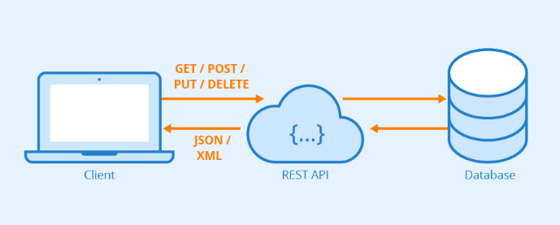
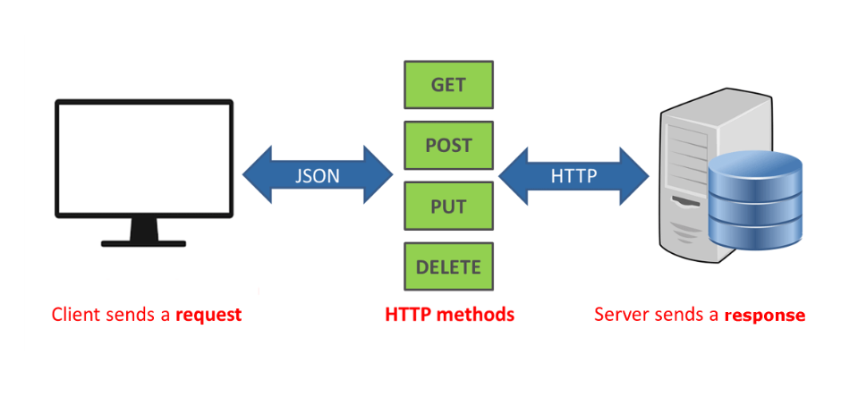

An API (Application Programming Interface) is a set of rules and
protocols for building and interacting with software applications. It
allows different software systems to communicate with each other.

Common Examples of APIs
Web APIs: Interfaces for interacting with web
services. For example, the Twitter API allows applications to access
public tweets and post new ones.
Operating System APIs: Allow applications to
perform functions like creating files, sending output to the
display, etc.
Database APIs: Enable communication between an
application and a database management system.
Importance of APIs
Integration: APIs allow different software systems
to work together, facilitating integration.
Automation: They enable automation of tasks by
allowing software systems to interact programmatically.
Extension and Scalability: APIs provide a way for
extending the functionality of existing products and services.
Understanding RESTful APIs and HTTP Methods

What are RESTful APIs?
REST (Representational State Transfer): An
architectural style for designing networked applications. RESTful APIs
use HTTP requests to access and use data.
Stateless: Each HTTP request from a client to server
must contain all the information needed to understand and complete the
request.
HTTP Methods
GET: Used to retrieve data from a server at the
specified resource. For example, requesting a user's data from an
API.
POST: Used to send data to a server to
create/update a resource. For example, posting a tweet via the
Twitter API.
PUT: Used to update an existing resource on the
server. Typically, it provides a complete update.
DELETE: Removes the specified resource from the
server.
What is JSON?
JSON (JavaScript Object Notation) is a lightweight data-interchange
format. It is easy for humans to read and write, and easy for machines
to parse and generate. JSON is built on two structures:
A collection of name/value pairs (often called an object in
programming languages).
An ordered list of values (often called an array).
Example of JSON
Here's a simple example of JSON data representing a person:
Data Interchange: It is a standard format for
sending and receiving data through APIs.
Configurations: Many applications use JSON for
configuration files.
Storage: JSON is used in databases like MongoDB to
store structured data.
HTTP Status Codes Overview
HTTP status codes are standardized codes returned by the server to
indicate the status of a client's request. They are grouped into five
classes:
1xx (Informational): These codes indicate a
provisional response, primarily to acknowledge that the request was
received.
2xx (Success): These codes indicate that the
client's request was successfully received, understood, and
accepted.
3xx (Redirection): These codes indicate that
further action needs to be taken by the client to complete the
request.
4xx (Client Error): These codes indicate an error
that the client made (e.g., a bad request or unauthorized access).
5xx (Server Error): These codes indicate an error
on the server's side (e.g., the server failed to fulfill a valid
request).
Common HTTP Status Codes
200 OK: The request has succeeded. The meaning of
the success depends on the HTTP method used.
301 Moved Permanently: This response code means
that the URI of the requested resource has been changed permanently.
404 Not Found: The server can't find the requested
resource. This code is often used when the server does not wish to
reveal exactly why the request has been refused.
500 Internal Server Error: A generic error message,
given when no more specific message is suitable.